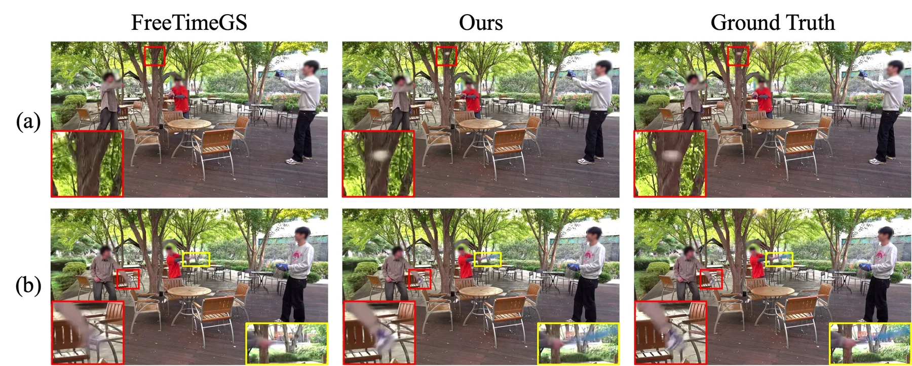
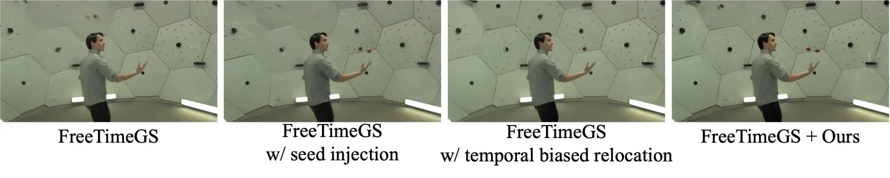
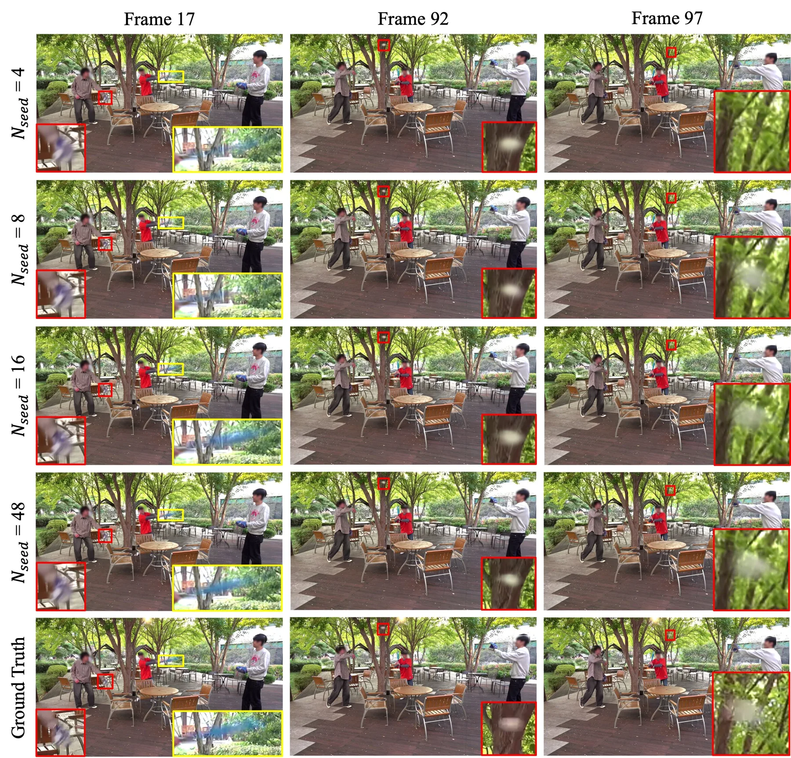
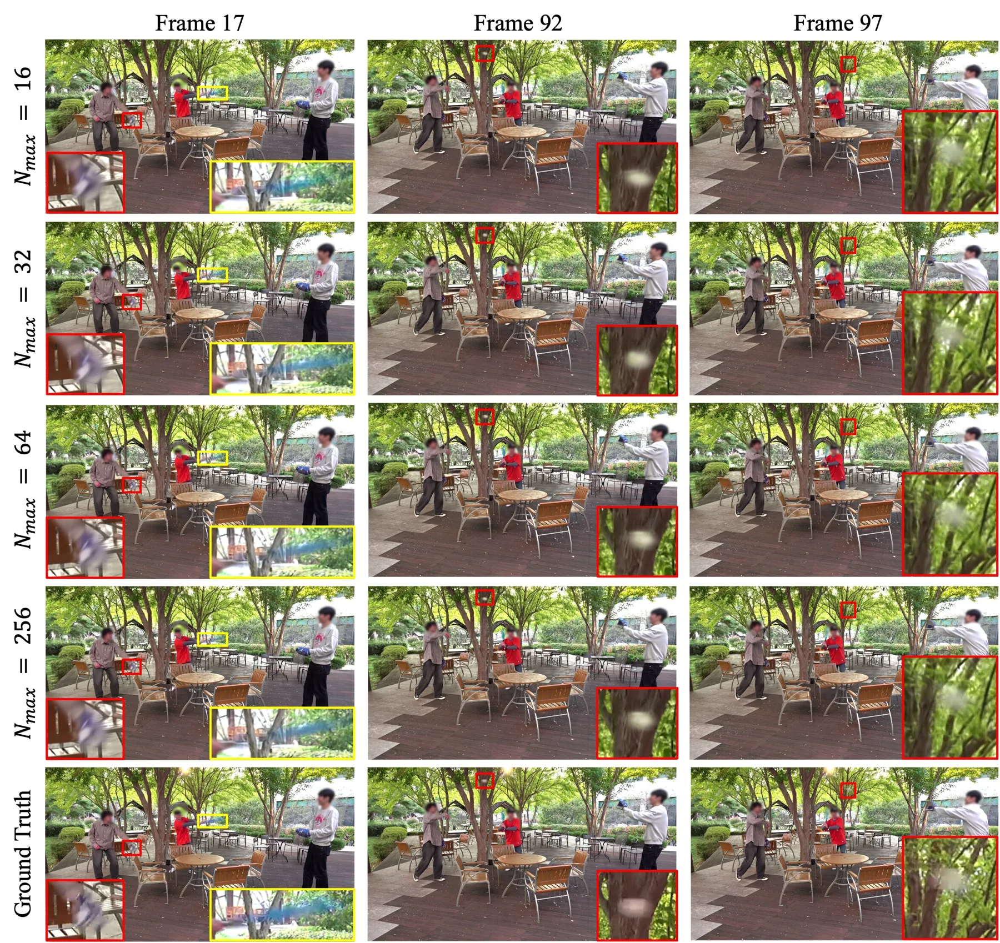
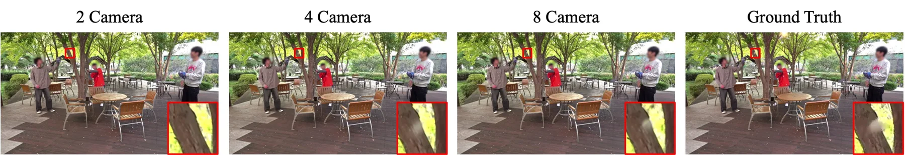
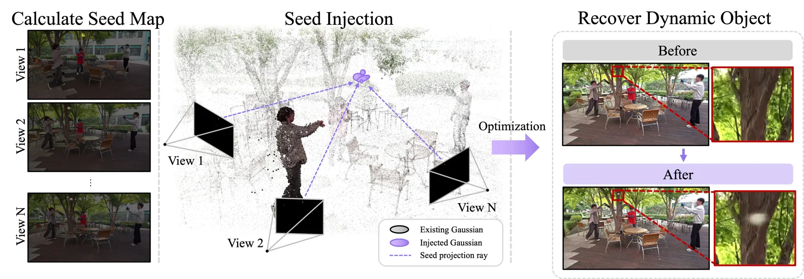

Dusting the Phantom：动态高斯的瓶颈是“分配”而不是“容量”
Dusting the Phantom: Gaussian Allocation for Fading Dynamic Content
方法建立在 FreeTimeGS 上，不动表示、只动分配。Seed Injection 把“帧差动态掩码 × 渲染误差”当种子图，从 8 个同步视角各采 48 个候选像素，用光线对最近点中点抬升到 3D，按光线距离排序后每帧最多注入 256 个种子（复用低透明度高斯，预算不变）；Temporal Biased Relocation 把目标高斯在各时刻的位置梯度归一化成时间分布，按此采样重定位时刻。整体增益不大但方向一致：N3DV 32.56 对 32.52、动态掩码内 32.87 对 32.27；CMU Panoptic 29.05 对 28.34、掩码内 27.28 对 26.68、LPIPS 0.063 对 0.110；自采 Custom 数据 20.98 对 20.84。消融显示 Seed Injection 主要“找回消失的物体”，Temporal Biased Relocation 主要提升感知质量。
作者、单位与技术谱系 · Research context
作者与单位
研究脉络
- FreeTimeGS（Wang et al., 2025）方法基座关系：提供显式时空高斯表示（位置、时间中心、时长、速度）与基于分数的重定位机制，本文完全沿用其表示与预算，只改分配。[FreeTimeGS（arXiv 2506.05348）]
- FreeTimeGS++（Lee et al., 2026）上游方法关系：改进初始化与优化稳定性，但仍未显式决定容量在时空上的目的地，本文把这一点作为差异化空间。[论文第 2 节相关工作]
- 误差驱动致密化与 LPM上游方法关系：同样从重建误差定位欠重建区，但一个依赖现有基元、一个依赖外部匹配模型，本文改用多视图视线几何绕开这两个依赖。[论文第 2 节与第 3.2 节]
- Seed Injection + Temporal Biased Relocation（本篇）本篇推进关系：把空间分配与时间分配拆成两个可独立消融的模块，并用“容量翻倍仍失败”的对照证明瓶颈在分配。[论文附录 A.1 与图 6]
合作网络
- Yonsei University 与 ETRI 的共同署名Yonsei University → Electronics and Telecommunications Research Institute (ETRI)关系：共同署名（同一篇论文的并列单位）[arXiv 官方 HTML 作者栏]
- POSTECH 与 Seoul National University 的共同署名POSTECH → Seoul National University关系：共同署名（同一篇论文的并列单位）[arXiv 官方 HTML 作者栏]
- 与 FreeTimeGS 官方实现的代码依赖FreeTimeGS（Wang et al.） → 本篇实现关系：官方基线代码依赖[论文第 4.1 节实现细节]
作者姓名与单位分组来自论文首页（事实），但逐人—单位对应在 HTML 中被打散，已标注待核验，未做推测；脉络基于论文自身相关工作与引用；网络只记录同篇署名与明确的代码依赖，未推断导师关系。
方法本质拆解 · What actually changed
是不是微调？
不是微调，是在目标序列上按 FreeTimeGS 默认配置继续优化，只改分配策略。高斯预算、迭代数、分辨率都保持基线设置（500K/1.5M、30K–100K 次），没有引入预训练网络；唯一新增的训练期动作是中途注入种子并短暂关闭重定位。
有没有额外约束？
新增的是几何一致性约束而非损失项：种子必须来自多视图视线对的最近点（δ 小才保留），3D 位置取两最近点中点，速度取到下一帧最近种子的位移作为粗初始化。另有工程约束：注入只在训练中点之后、每帧最多 N_max 个、复用低透明度高斯以保持总预算不变。
推理/后端到底做了什么？
推理端没有任何新东西：仍是 FreeTimeGS 的时空高斯光栅化，注入的种子在训练结束后就是普通高斯，不需要额外匹配、优化或后处理。这也意味着方法的全部代价在训练期（+0.22 分钟），测试期开销不变。
方法本质是什么？
本质是把“容量从哪来”和“容量放哪去”解耦：Seed Injection 绕开“只能从现有高斯派生”的限制，直接从观测抬升新支撑；Temporal Biased Relocation 把聚合的时间信号拆回逐时刻分布，让重定位落在真正困难的帧。它没有提高表示能力，只改变了优化过程中容量在时空上的流向。
输入同步多视图视频与相机参数，改动位置在高斯分配环节（注入来源与重定位落点），通过多视图视线抬升与时间梯度采样把容量送到零支撑区与困难时刻，直接效果是快速小目标从消失变为可重建。

结论与问题Conclusion & Motivation
核心结论
这篇论文把“动态重建失败”重新归因为分配问题：增密与重定位都从已有高斯里取材，因此本来就没有支撑的区域永远拿不到支撑，小而快的物体就会整块消失。作者的对照很直接：把 FreeTimeGS 的高斯数从 1.5M 加到 3M、迭代从 0.1M 加到 0.2M，快速运动的球仍然重建不出来，而他们的方法用 1.5M 高斯、0.1M 迭代就能恢复。两个模块分工也清楚：Seed Injection 负责“从无到有”地补支撑，Temporal Biased Relocation 负责“在正确时刻”补容量，合起来在 CMU Panoptic 上把整体 PSNR 从 28.34 提到 29.05、掩码内从 26.68 提到 27.28。
动机与问题
FreeTimeGS 这类显式时空高斯把每个基元绑定到位置、时间中心、持续时长与速度，重定位时从低透明度高斯里回收容量、再分配给采样分数高的目标。问题在于“目标”也是已有高斯：如果某个快速小目标所在区域压根没有高斯，分数就无从产生，容量永远不会流向那里。另一方面，重定位打分通常把所有时刻聚合成一个标量，丢掉了“什么时候最需要容量”的信息——同一个高斯可能整体分数很高，但真正需要补的是某一帧。作者因此把问题拆成空间分配（哪里缺支撑）与时间分配（哪一帧缺支撑）两半，并刻意不改表示、不加预算，保证增益可归因于分配策略本身。
方法Method
方法总览
Seed Injection：对每个视角、每个时刻计算种子图 M = D ⊙ E，其中 E 是渲染图与真值的 ℓ1 误差，D 是前后帧灰度差得到的动态掩码；从 C=8 个同步视角各采 N_seed=48 个候选像素，把每个候选变成一条视线，对所有跨视角视线对求最近点距离 δ，保留几何一致的配对并取两最近点中点作为 3D 种子，按 δ 排序后每帧最多保留 N_max=256 个；每个种子通过重初始化一个低透明度高斯落地，尺度按该深度的像素足迹初始化，速度取到下一帧最近种子的位移。训练到中点才开始注入（此时误差信号才有意义），逐帧注入后做 10 次优化，并暂停重定位 10·N_frames 次迭代让新基元适应。Temporal Biased Relocation：对目标高斯在轨迹各时刻的位置梯度取模、按时间归一化成分布 P_g(t)，按此采样落点时刻 t*，把被重定位高斯的时空中心放到 (μ_x(t*), t*)。
关键技术细节
多视图抬升是整个方法最实的部分：它不依赖外部匹配模型（对比 LPM 需要跨视图特征对应），也不需要已有高斯提供深度先验（对比 SpaceTimeGS），只用相机内外参和视线几何，因此能在“零支撑”区域工作，代价是候选数量必须够大（8×48=384 条视线/帧）且依赖时间同步。固定预算通过“复用低透明度高斯”实现，所以注入不会让模型变大；作者也强调这不是加容量而是搬家。注入时机选在训练中点、并暂停重定位一段时间，是为了避免新种子立刻被重定位逻辑回收，这个工程细节对复现很关键。评测掩码用 SAM 3 生成（真值掩码不可得），极快目标再并入注入用的动态掩码，保证这些区域进入统计。

实验Experiments
实验设置
三套数据：N3DV 全部 6 个场景（每段 300 帧、19–21 机位、2704×2028 下采样 2 倍，机位 0 测试）；CMU Panoptic 6 段 150 帧序列（640×360，27 机位训练，0/10/15/30 测试）；自采 Custom 两段（Baseball 250 帧、Break 300 帧，1920×1080，23 机位，留一个中间机位测试），专门覆盖小而快目标。高斯预算 500K（N3DV/Panoptic）、1.5M（Custom），迭代 30K/50K/100K。指标为 PSNR、动态掩码内 PSNR、DSSIM1/2、LPIPS。对照包括 DyNeRF、K-Planes、NeRFPlayer、Deformable-3DGS、SpaceTimeGS、RealTime4DGS、Ex4DGS、4DGaussian 以及基线 FreeTimeGS。
实验数字与比较
N3DV（表 1）：整体 32.56 对 FreeTimeGS 32.52（+0.04），动态掩码内 32.87 对 32.27（+0.60），LPIPS 0.040 对 0.041，属于“整体基本持平、动态区明显更好”。CMU Panoptic（表 2）：29.05 对 28.34（+0.71），掩码内 27.28 对 26.68（+0.60），DSSIM1 0.032 对 0.039，LPIPS 0.063 对 0.110（接近腰斩）。Custom（表 3）：20.98 对 20.84（+0.14），掩码内 27.47 对 27.37（+0.10），LPIPS 0.160 对 0.170。消融（CMU 三段平均，表 4）：基线 28.22 / 掩码 27.58 → 加 Seed Injection 28.53 / 27.82 → 加 Temporal Biased Relocation 28.57 / 28.02 → 两者合用 28.98 / 28.24；训练时间 5.69 → 5.85 → 5.74 → 5.91 分钟。
消融/失败边界
消融暴露了一个与论文叙事不完全一致的细节：Seed Injection 单独使用时 PSNR +0.31，但 DSSIM1 仍是 0.045、LPIPS 从 0.161 只到 0.160，几乎没有感知改善；Temporal Biased Relocation 单独使用时 PSNR +0.35，却把 DSSIM1 从 0.045 降到 0.034、LPIPS 从 0.161 降到 0.080。也就是说，“找回消失物体”的收益主要体现在 PSNR 与定性图上，而感知质量的提升主要来自时间偏置重定位，两者并非同一机制。作者的失败边界也与此呼应：种子图靠帧差，若快速目标的灰度与背景接近，帧差很弱，种子就注不进去，这类场景方法会退化回基线。另一个边界是预算：所有实验在 500K–1.5M 高斯下做的，容量极紧时分配策略才最关键，容量宽松时收益会被稀释。
局限与迁移Limitations & Transfer
局限与待核验
作者承认两条：Seed Injection 的帧差判据过于简单，外观与背景相近的快速物体会漏检；数据集多样性不足，需要更多高动态数据。我们另加：全帧 PSNR 增益（N3DV +0.04）在单次运行下难以确认显著性，论文没有报告多次运行或方差；评测掩码来自 SAM 3 分割而非真值，掩码内指标的可比性受限；Custom 数据只有两段，且由作者自采，外部可复现性弱；训练时间只增加 0.22 分钟（5.69→5.91），但没有报告推理 FPS 与显存变化（固定预算下应当接近，但未验证）；注入超参（N_seed=48、N_max=256、C=8）的敏感性放在附录 A.3，正文未给结论。
与你研究路线的关系
最可迁移的是“用多视图视线几何在零支撑区初始化”的做法：它不需要外部匹配网络，也不依赖当前地图，适合在动态物体层或新建子图时做冷启动。第二个是时间维度的容量分配：把位置梯度按时间归一化成分布再采样，这个思路可以直接用于关键帧选择或因子图里的节点增删——不是“这个点重要”，而是“这个时刻需要更多自由度”。第三个是“固定预算、只搬家”的实验纪律：它让增益可以干净地归因于分配策略，这一点值得在写自己的消融时借用。下一步实验：在一段有快速小目标的序列上，先只做 Seed Injection（不开时间偏置），观察 PSNR 与 LPIPS 的分离是否复现；再比较“按时间梯度采样”与“均匀采样落点”，确认时间偏置的收益不是来自重定位次数减少。







